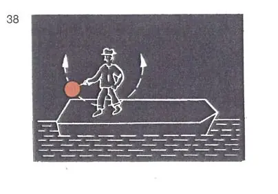
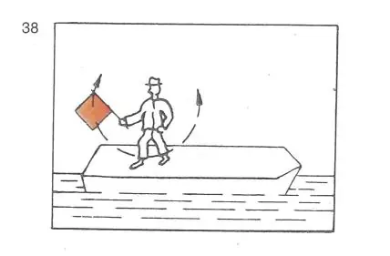

§ 3.18 Zusätzliche Bezeichnung manövrierunfähiger Fahrzeuge in Fahrt (Anlage 3: Bild 38)
Rheinschiffahrtspolizeiverordnung
Ein manövrierunfähiges Fahrzeug in Fahrt muss erforderlichenfalls außer der anderen nach dieser Verordnung vorgeschriebenen Bezeichnung | |||
- | bei Nacht: | ||
ein rotes Licht zeigen, das geschwenkt wird; |  | ||
- | bei Tag: |  | |
eine rote Flagge zeigen, die geschwenkt wird, | |||
oder | |||
das vorgeschriebene Schallzeichen geben | |||
oder | |||
beides zugleich tun. | |||
Die Flagge kann durch eine Tafel gleicher Farbe ersetzt werden. |